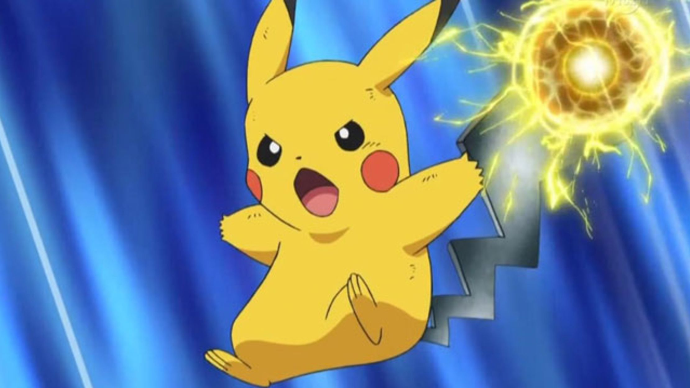

En los videojuegos de Pokémon, los jugadores asumen el papel de entrenadores Pokémon, cuyo objetivo es capturar y entrenar a estas criaturas para que luchen en batallas contra otros entrenadores. Cada Pokémon tiene habilidades y características únicas, y puede evolucionar a formas más poderosas a medida que sube de nivel .